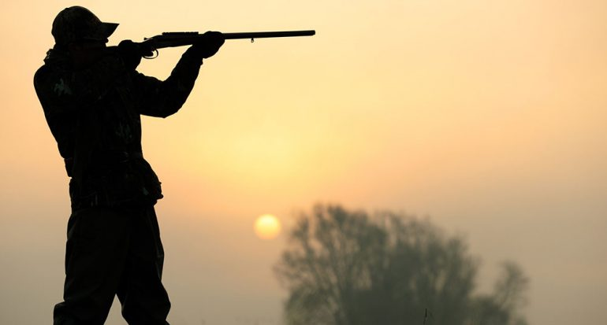
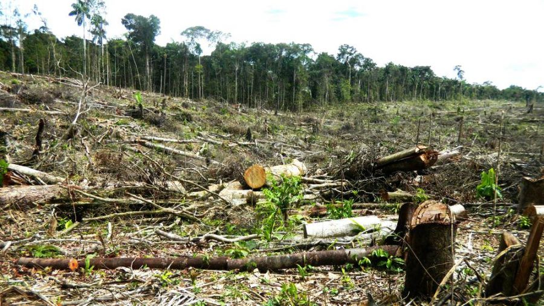
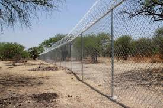
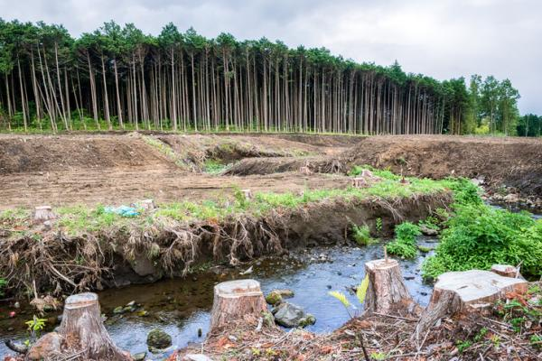
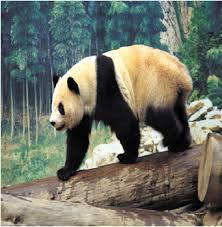
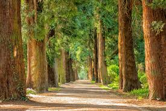
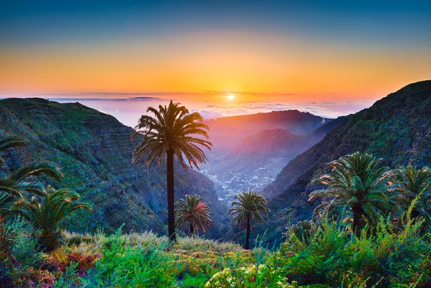
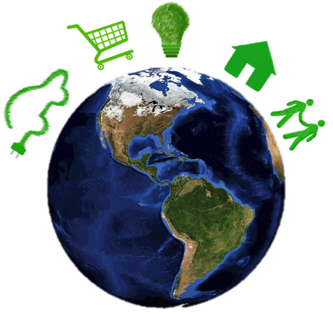
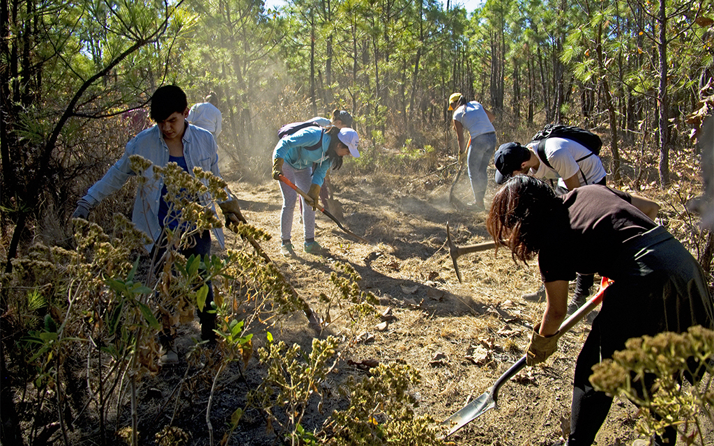
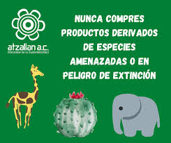

Juntos, salvemos el planetaTodos podemos tomar pequeñas pero importantes medidas para disminuir nuestra huella ecológica en el planeta, además de ayudar a combatir el cambio climático. Aquí algunas ideas de lo que puedes hacer en casa o en el trabajo. Por favor, únete a esta lucha y ¡pon de tu parte! |
|||
Prohibir la caza de animales. |
Quizás una de las más importantes para llevar a cabo la labor de protección animal. Porque la cacería ha puesto a muchas especies en peligro. Si se trabaja para erradicar la caza furtiva de animales, la amenaza de especies derivada de ella resultaría completamente evitable. |
||
Evitar la deforestación de bosques. |
Los bosques dan cobijo la biodiversidad que vive en ellos. La tala de árboles está causando estragos en las especies animales. De hecho, muchas de ellas no sobreviven. Otras, en cambio, tienen que migrar hacia entornos o hábitats de los que no son naturales. Esto es lo que está ocurriendo con los osos polares, que han tenido que buscar comida fuera de su entorno natural. |
||
Delimitar las áreas protegidas y reservas naturales |
En su tarea por la protección y el cuidado animal, los gobiernos deben actuar para marcar las zonas especialmente vulnerables. |
||
Evitar la contaminación de los recursos naturales |
La naturaleza es la fuente de recursos más importante del mundo animal. Así, la protección de los entornos naturales se vuelve esencial para crear un mundo más habitable y sostenible. |
||
Promover planes para la reproducción en cautiverio. |
La reproducción controlada es una forma muy efectiva de ayudar a ciertas especies. De esta manera, una vez alcanzada una población razonable, se podría reintroducir una especie amenazada en las zonas donde vivía históricamente. |
||
Contribuir a la disminución de la tala de árboles con el reciclaje. |
Reciclar es una manera muy fácil de ser sostenible. No hay más que seguir a las instrucciones oficiales para llevar a cabo un reciclaje adecuado. |
||
Respetar las áreas protegidas y reservas naturales. |
En primer lugar, sigue todas las indicaciones que se te den cuando asistas a un paseo. Pero si vas a un lugar que no tiene mucha señalización, actúa con sentido común, buscando siempre la protección del entorno y los animales que viven en él. |
||
Comprar con responsabilidad. |
Desde la perspectiva individual, la protección animal comienza con el momento de compra. Al no comprar productos hechos de animales en peligro de extinción o partes de los mismos, puedes hacer que el tráfico ilegal de vida silvestre no sea un negocio lucrativo. |
||
Restaurar los ecosistemas. |
La destrucción de hábitats es la principal amenaza para el 85% de todas las especies en riesgo y en peligro de extinción. Son datos de la Unión Internacional para la Conservación de la Naturaleza. Puedes ayudar a reducir este peligro plantando árboles nativos, restaurando las tierras pantanosas o limpiando playas en tu área. |
||
Hacer donaciones. |
Cuando visites zoológicos acreditados y reservas naturales locales, paga el precio de entrada recomendado. Tus donaciones ayudan a mantener estas áreas vitales de conservación. |
||